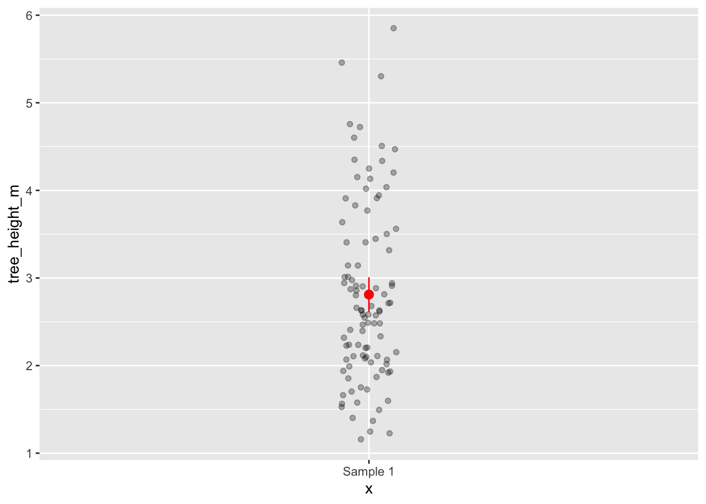

Estimation, uncertainty and error
Exercise 5
Get RStudio setup
Each time we start a new exercise, you should:
- Make a new folder in your course folder for the exercise (e.g.
biob11/exercise_5) - Open RStudio
- If you haven’t closed RStudio since the last exercise, I recommend you do so and then re-open it. If it asks if you want to save your R Session data, choose no.
- Set your working directory by going to Session -> Set working directory -> Choose directory, then navigate to the folder you just made for this exercise.
- Create a new Rmarkdown document (File -> New file -> R markdown..). Give it a clear title.
We are now ready to start.
Estimation and uncertainty
Recall that our goal when doing statistics is to use a sample to estimate properties of the population from which we collected our sample. For example, if we were interested in the average height of trees in a forest, we might randomly measure 100 trees in that forest, then use that sample to estimate the average height of trees in the entire forest (the population).
It is unlikely that our observed mean of the sample we collected will be exactly the same as the true mean of the forest, just from the fact we have not measured every single tree in the forest. If we selected our trees to measure at random (without bias), then our sample should be representative of the forest, and our observed mean should be a good estimate of the true mean. But how good? That’s what we will work on for the first part of this exercise.
Collect a sample
Sticking with the height of trees example, each student will virtually sample 100 trees at random from the forest. I (Iain) have data on every tree in the forest (because I simulated it). As such I know the true properties of the forest (usually we can never know this information). Each of you will work with a different sample, and we will see how good an estimate of the true properties of the forest you can get from your sample.
Run the bit of code below in your browser. It will assign you a sample to work with. Use the link it outputs to download a .csv file as you did in the previous exercise.
Calculate observed statistics
We want to use our sample to estimate the mean and standard deviation of the height of trees tree_height_mm in the forest. You can do that any way you want, as long as you end up with two objects, one that contains the mean and one that contains the standard deviation. Use code from previous exercises to help you.
Once you have calculated them, write them on the board.
Answer the following questions:
- What does each of the following statistics describe:
- The arithmetic mean
- The standard deviation
- What are the units of each of the following statistics (in this example):
- The arithmetic mean
- The standard deviation
Estimate the uncertainty
The next step is to calculate a measure of uncertainty in our observed statistics. We only took a single sample of \(n = 100\) out of a \(10000\) tree forest. Because of this, our observed statistics may not be exactly equal to the true population parameters1. In other words, if we were to go back to the forest and measure the heights of another random sample of trees (like your neighbour has done), the observed test statistics would probably be slightly different. We want to provide some estimate of the uncertainty in the observed statistics in our sample that reflects this.
To do that, we can use a bootstrap procedure. This is an important concept to understand, and it can be a little counter-intuative, so it may take a few reads for it to click. After all, we are generating many “samples” from a single sample! From Section 8.2 of Chester et al. (2025):
In 1979, Brad Efron published an article introducing a method called the bootstrap (Efron 1979) that is next summarized. A random sample of size \(n\) is taken from the population. This sample is used to find another sample, with replacement, also of size \(n\). This is called resampling with replacement and the resulting sample is called a bootstrap sample. For example, if the original sample is \(\{4,2,5,4,1,3,7,4,6,1\}\), one particular bootstrap sample could be \(\{6, 4, 7, 4, 2, 7, 2, 5, 4, 1\}.\) Observe that the number 7 appears once in the original sample, but twice in the bootstrap sample; similarly, the number 3 in the original sample does not appear in the bootstrap sample. This is not uncommon for a bootstrap sample, some of the numbers in the original sample are repeated and others are not included.
The basic idea of the bootstrap is to gain a large number of bootstrap samples, all drawn from the same original sample. Then, we use all these bootstrap samples to find estimates of population parameters, standard errors, or even the density curve of the population. Using them we can construct confidence intervals, perform hypothesis testing, and other inferential methods.
This method takes advantage of the large number of bootstrap samples that can be determined. In several respects, this exercise is not different from the sampling distribution explained in Chapter 7. The only difference, albeit an important one, is that we are not sampling from the population, we are sampling from the original sample. How many different bootstrap samples could we get from a single sample? A very large number, actually. If the original sample has 10 numbers, as the one shown above, each possible bootstrap sample of size 10 is determined by sampling 10 times with replacement, so the total number of bootstrap samples is \(10^{10}\) or 10 billion different bootstrap samples. If the original sample has 20 numbers, the number of bootstrap samples is \(20^{20}\), a number greater than the total number of stars in the universe. Even with modern powerful computers, it would be an onerous task to calculate every possible bootstrap sample. Instead, a thousand or so bootstrap samples are retrieved, similar to the simulations performed in Chapter @ref(sampling), and this number is often large enough to provide useful results.
Since Efron (Efron 1979) proposed the bootstrap, the statistical community embraced this method. During the 1980s and 1990s, many theoretical and empirical results were presented showing the strength of bootstrap methods. As an illustration, Efron (Efron 1979), Hall (Hall1986?), Efron and Tibshirani (1986), and Hall (1988) showed that bootstrapping was at least as good if not better than existent methods, when the goal was to estimate the standard error of an estimator or find the confidence intervals of a parameter. Modifications were proposed to improve the algorithm in situations where the basic method was not producing accurate results. With the continuous improvement of computing power and speed, and the advantages of having ready-to-use statistical software for its implementation, the use of the bootstrap has become more and more popular in many fields.
As an illustration, if we are interested in the mean of the population and we have collected one random sample, we can gain a large number of bootstrap samples from this original sample, use them to calculate sample means, order the sample means from smallest to largest, and choose the interval that contains the middle 95% of these sample means. This will be the simplest way to find a confidence interval based on the bootstrap. In the next few subsections, we explore how to incorporate this and similar methods to construct confidence intervals.
Generating bootstrap samples
We can use the infer package to generate bootstrap samples. As when we were doing hypothesis testing, we specify() the variable we are interested in, then generate() the bootstrap replicates (note as we are not testing a hypothesis, we do not need a hypothesize() step).
The first argument of generate() is the number of reps (replicates), which is the number of (in this case) bootstrap samples we would like to generate(). You should set this value to at least 1000, but as you all have fairly modern computers, values such as 10000 will probably run in less than a second. Using higher values has diminishing returns, and will make plotting take a lot longer!
The second argument of generate() is the type of simulation. Recall that when we performed a hypothesis test on the difference of two means, we used type = "permute" to shuffle our explanatory variable in order to produce a null distribution. In this case, we want to do a type = "bootstrap" simulation.
Use the code below to generate() bootstrap samples, then answer the questions.
______ |>
specify(response = ______,) |>
generate(reps = ______, type = ______)- What real world process is the bootstrap procedure simulating?
- Why does the output of the code above have the number of rows that it does?
- In theory, how many unique bootstrap samples could you generate from your original sample (if you had infinite time and computing power)?
Calculating bootstrap sample statistics
After we generate() our bootstrap samples, we want to summarize each of them by calculating the statistics we are interested in. We do that as we did before, with the calculate() function. Add a pipe |>, then calculate() the statistics we are interested in.2 Save each set of bootstrap simulated statistics as seperate objects.
Visualize the bootstrap sampling distribution
Use visualize() to quickly produce plots of your two bootstrap sampling distribution. Note that these plots are just ggplot() objects so, for example, you can use + to add things like labs(x = "My statistic") or change the theme_. visualize() is simply a shortcut for writing:
1bootstrap_statistics |>
ggplot(aes(x = stat)) +
geom_histogram()- 1
-
Where
bootstrap_statisticsis the data frame of calculated statistics from your bootstrap simulations.
Answer the following questions:
- What do these distributions show? How would you describe this distribution to someone who does not know what “bootstrapping” is?
- Describe the shape of each distribution? Are they the same? Why?
- Where do your observed statistics lie on these distributions?
Confidence intervals
A confidence interval quantifies the effect of sampling error on obtaining an estimate. A strict interpretation of a confidence interval is:
If we repeated our experiment many times and calculated a X% CI each time, the X% CI’s would include the “true” value X% of the time.
A less strict definition could also be that CI’s provide a plausible range for the true value we aim to estimate.
Confidence intervals are most helpful when stated alongside your observed statistic. For example, you might write that the average tree height was 2.46 m (95% CI: 1.92 - 2.81 m). A large confidence interval implies that there is a high influence of sampling error. Conversly, a small confidence interval implies that there is a low influence of sampling error.
Answer the following questions:
- From this definition, can you think of two properties of our sample that might affect the confidence interval?
Calculating confidence intervals
There are a few ways we can calculate a confidence interval. The first way we will cover is (almost) universal (you can apply them to any test statistic, with a few caveats) and the last relies on a special property of the sampling distribution of means. Just know that there are many ways to do this, but we do not have the time to go through the theory that justifies some of the more complicated options.
The percentile method
From Chester et al. (2025):
The percentile method for constructing 95% confidence intervals sets the lower endpoint of the confidence interval at the 2.5th percentile of the bootstrap sampling distribution and similarly sets the upper endpoint at the 97.5th percentile. The resulting interval captures the middle 95% of the values of the bootstrap sampling distribution.
To calculate the percentile confidence interval, you should pipe |> your bootstrap sampling distribution into the get_confidence_interval() function, with type = "percentile". Use the level = argument to set your confidence interval (e.g. 0.95 for a 95% CI).
______ |>
get_confidence_interval(level = ______, type = "percentile")Save these confidence intervals as an object, as we will need to use them in a moment.
To visualize these confidence intervals on our bootstrap sampling distribution, use the same visualize() code as before, and add:
1+ shade_confidence_interval(endpoints = ______)- 1
-
Replace
______with your percentile confidence intervals
Write your 95% percentile CI on the board next to your observed test statistics
The standard error method
Recall that the definition of the standard error (of the mean) is the standard deviation of the sampling distribution of means. That is, if we were to keep taking new samples from our population and calculating means of those samples, the standard deviation of the resulting distribution of means is the standard error. Sound familiar? This is exactly what we have simulated using our bootstrap simulations (for the mean at least)!
The sampling distribution of means has special properties. From Chester et al. (2025):
A fascinating result in statistics is that, when retrieving random samples from any population, the corresponding sample means follow a typical behavior: their histogram is bell-shaped and has very unique features. This is true regardless of the distribution of the population values and forms the basis of what we know as the Central Limit Theorem.
This distribution is called the normal distribution. We will talk more about it during a lecture, but know now that one feature of this distribution is that to capture the middle 95% of it, we can use the following formula: \[ \left(\overline{x} - 1.96 \cdot SE_{\text{boot}}, \quad \overline{x} + 1.96 \cdot SE_{\text{boot}}\right) \]
In words, the upper 95% CI can be calculated by multiplying the standard error (which in our example, is the standard deviation of our bootstrap sampling distribution) by 1.96 and then adding the mean. The lower 95% CI is calculated in a similar fashion, but substracted from the mean.
Note that only works for the sampling distribution of means
To calculate this, we can use the same get_confidence_interval() function, but this time we also need to support a point_estimate = (our observed mean) and change the type = "se".
______ |>
get_confidence_interval(type = "se", point_estimate = ______, level = ______)As you did before, save this as an object, and visualize() it.
Answer the following questions:
- How do your confidence intervals for the mean compare with the percentile and the standard error method?
- Why can we not use 100% confidence intervals?
Plotting uncertainty on figures
Error bars are a common way to visualize uncertainty in observed statistics. In ggplot2, you can add error bars to your plots using the geom_errorbar() function. This function requires you to specify the aesthetics for the minimum and maximum values of the error bars, typically using ymin and ymax. Your confidence interval objects contain the information needed.
Here are some examples of how you might visualise your 95% CI of the mean on a figure. In this example
1summary_data <-
observed_mean |>
bind_cols(percentile_ci) |>
2 rename(tree_height_m = stat)
3tree_data |>
4 ggplot(aes(y = tree_height_m, x = "Sample 1")) +
geom_jitter(width = 0.05, alpha = 0.3) +
5 geom_pointrange(data = summary_data, aes(ymin = lower_ci, ymax = upper_ci), colour = "red")- 1
-
I first make a new dataframe, by combining my observed mean and my confidence interval dataframes with
bind_cols() - 2
-
To make sure
ggplotknows that I want the mean value to be on the same scale as the normal data, I rename it to have the same name. - 3
-
tree_datais my original sample dataframe. - 4
-
I write
x = "Sample 1", as I want to show this using a geom (geom_jitter) that requires andxand ayvariable.x = "Sample 1"acts as a “dummy variable” (it has no meaning, just here for plotting). - 5
-
geom_pointrange()plots both a point and a range. Note that you can provide different data frames to differentgeom_if you want, like I did here.

In general, if you are unsure how to plot something in ggplot2(), a search engine is your friend. You will find countless examples. The ggplot2 cheatsheet is also a great place to look.
Once you have made your figure, you should write a figure caption explaining clearly what your figure show, including what any error bars are representing (very important!).
Is the forest ready for harvest?
To decide if the forest is ready for harvest, the forestry company uses a criteron:
The proportion of trees in the forest equal to or taller than than 2.65 m needs to be at least 50%.
To answer that question, we will use your sample. But we first need to make a new variable that contains the information if a tree is equal to or greater than 2.65 m.
Questions:
- How could you write a conditional statement that would evaluate to
TRUEif a value was equal to or greater than 2.65 m? Check back to Exercise 1 if you can’t remember.
Once you have your conditional statement, use the code below to create your new variable. If you don’t understand what a line of code is doing, please ask!
3______ <-
1_______ |>
2 mutate(harvest_status = if_else(condition = tree_height_m ______, true = "______", false = "______"))- 1
- Use your sample data frame.
- 2
-
Here we use a
mutate()function.mutate()can create new variables from existing variables. I first write the name of my new variableharvest_status, then I use anif_else()command. If you have encountered this command in any spreadsheet software, it does the same thing here. It takes a conditional statementcondition, and if it isTRUEit outputs one thing, and if it isFALSEit outputs another thing. For example here, you might wanttrue = "ready to harvest"andfalse = "not ready to harvest". Or maybe simply"yes"and"no". - 3
- To save the changes we made to the sample dataframe, assign it to an object. This could be the same name as your original sample, or a new object.
State your hypotheses
Here, convert the research question into a null hypothesis and an alternative hypothesis. State these clearly. Is there a direction to your alternative hypothesis?
Plot the data
Make an illustrative plot that reflects the research question. Ensure that the axis have clear labels.
Calculate the observed statistic
Before you click the box below, try to decide yourself what the observed statistic should be in this case. Remember, a statistic is just any property we could calculate from a sample.
Calculating a confidence interval
Since we have just calculated them, let’s also calculate a confidence interval here for the observed statistic. Note that this is NOT a hypothesis test (although it gives us information that might affect our predicted outcomes of a hypothesis test). We are calculating this to show our uncertainty in our observed statistic due to sampling error.
Adapt the code we just used to calculate the statistic, and the code we used before to generate bootstrap samples to calculate a 95% CI for your observed statistics.
Adding the confidence interval to your plot
Add the confidence interval to the plot you made before, using the geom_errorbar() (verticle error bars) or geom_errorbarh() (horizontal error bars). Try to use the example above and resources online before asking for help.
NOTE: Since you might have shown both the proportion of “succeses” and “failures” on your original plot, you may need to calculate a confidence interval for the “failures”. You do this using the same code as above, but you would change you success = argument to the other option in your response = variable.
Test your hypothesis
Similar to how we did in Exercise 4, we want to simulate a null distribution. We do that by imagining a world in which our null hypothesis is TRUE, and simulate data compatible with that world. Try to use the code from that exercise, in combination with some of the code we used to calculate our observed statistic today. You might need to look at the helpfiles for hypothesize() to figure out what arguments you need to use. You can also use the infer set of examples as a guide.
As you have done before, visualize() both your null distribution and your observed statistic. In addition calculate a p-value.
Report your findings
Write a paragraph where you decribe your findings, as if you were writing a report for the timber company that owns the forest. Ensure you report your observed statistic with confidence intervals, the outcome of your hypothesis test with p-values, and your conclusions based on your results. Ensure you also phrase your findings in a way in which someone who doesn’t understand the statistics could understand it, and then make a judgement based on it.
Finally, add your findings to the board.
References
Chester, I., A. K. Kim, and A. Valdivia. 2025. Statistical Inference via Data Science: A ModernDive into R and the Tidyverse (2nd ed.).
Efron, B. 1979. Bootstrap Methods: Another Look at the Jackknife. The Annals of Statistics 7:1–26.